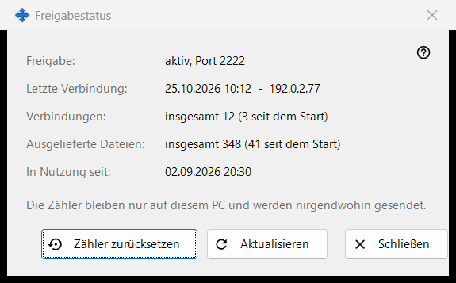
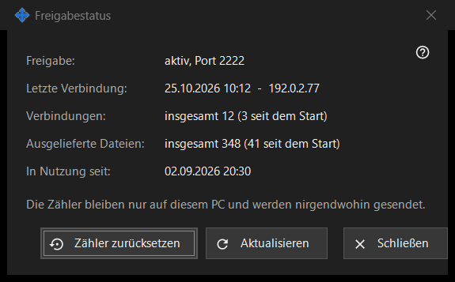

Freigabestatus
Verwendungszweck
Zeigt den aktuellen Zustand der Freigabe und ihre einfachen Zähler. Es öffnet sich über den Link «Statistik» des Hauptfensters.


In dieser Reihenfolge
- Lesen Sie oben den Zustand.
- Prüfen Sie die letzte Verbindung, die Zahl der Verbindungen und der ausgelieferten Dateien.
- Drücken Sie «Aktualisieren» für neue Werte.
- Drücken Sie «Zähler zurücksetzen», um die Zählung neu zu beginnen.
- Drücken Sie «Schließen».
Die Elemente
Zustand
«Freigabe:» sagt, ob die Freigabe läuft und auf welchem Port, oder dass sie aus ist, oder dass der Worker nicht verfügbar ist. «In Nutzung seit:» zeigt, wann die Freigabe gestartet wurde.
Zähler
«Letzte Verbindung:» zeigt den Zeitpunkt des letzten Telefons oder «noch nie». «Verbindungen:» und «Ausgelieferte Dateien:» zeigen die Gesamtzahl und in Klammern die Zahl seit dem letzten Start. Die Zähler bleiben nur auf diesem PC und werden nirgendwohin gesendet.
Aktualisieren und zurücksetzen
«Aktualisieren» liest die Werte erneut vom Server. «Zähler zurücksetzen» fragt vorher nach: Die früheren Werte lassen sich nicht wiederherstellen. Schlägt das Zurücksetzen fehl, zeigt die Schaltfläche «Zurücksetzen fehlgeschlagen». «Schließen» verlässt das Fenster.
Managereinstellungen · SFTP-Freigabeeinstellungen · Einstellungen des Austauschservers